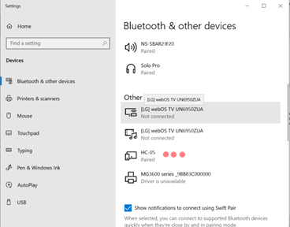

Objective
The objective for this lab is to understand how to use Espressif UART driver. Universal Asynchronous Receiver/Transmitter is a peripherl used to receive and send data, this protocol is a serial communication type. The ESP32 has three UART channels: UART 0, UART 1, UART 2. In this configuration we will use UART 1 which allows you to select custom pins for the RX and TX setup. Students must receive information from the sender using UART and control the PWM peripheral to dim and brighten an LED to show LOW, MEDIUM and HIGH.
| Tasks | Objective |
| UART TASK | Receive data and send through Queue |
| PWM TASK | Receive Queue and change duty cycle |
Bonus
- Undergrad Bonus
- Send the current state of the LED back to sender
- Grad Bonus
- Add another LED and send both LEDs' states back to the sender
ESP32 Pinout
+-----------------------+
| O | USB | O |
| ------- |
3V3 | [ ] [ ] | VIN
GND | [ ] [ ] | GND
Touch3 / HSPI_CS0 / ADC2_3 / GPIO15 | [ ] [ ] | GPIO13 / ADC2_4 / HSPI_ID / Touch4
CS / Touch2 / HSPI_WP / ADC2_2 / GPIO2 | [ ] [ ] | GPIO12 / ADC2_5 / HSPI_Q / Touch5
Touch0 / HSPI_HD / ADC2_0 / GPIO4 | [ ] [ ] | GPIO14 / ADC2_6 / HSPI_CLK / Touch6
U2_RXD / GPIO16 | [ ] [ ] | GPIO27 / ADC2_7 / Touch7
U2_TXD / GPIO17 | [ ] [ ] | GPIO26 / ADC2_9 / DAC2
V_SPI_CS0 / GPIO5 | [ ] ___________ [ ] | GPIO25 / ADC2_8 / DAC1
SCK / V_SPI_CLK / GPIO18 | [ ] | | [ ] | GPIO33 / ADC1_5 / Touch8 / XTAL32
U0_CTS / MSIO / V_SPI_Q / GPIO19 | [ ] | | [ ] | GPIO32 / ADC1_4 / Touch9 / XTAL32
SDA / V_SPI_HD / GPIO21 | [ ] | | [ ] | GPIO35 / ADC1_7
CLK2 / U0_RXD / GPIO3 | [ ] | | [ ] | GPIO34 / ADC1_6
CLK3 / U0_TXD / GPIO1 | [ ] | | [ ] | GPIO39 / ADC1_3 / SensVN
SCL / U0_RTS / V_SPI_WP / GPIO22 | [ ] | | [ ] | GPIO36 / ADC1_0 / SensVP
MOSI / V_SPI_WP / GPIO23 | [ ] |___________| [ ] | EN
| |
| | | ____ ____ | |
| | | | | | | | |
| |__|__| |__| |__| |
| O O |
+-----------------------+
Example
Here is an example of a UART receiving data and printing Hello World.
#include "freertos/FreeRTOS.h"
#include "freertos/task.h"
#include "driver/uart.h"
#include "freertos/queue.h"
#include <driver/ledc.h>
#include "freertos/queue.h"
#include <stdio.h>
#include <string.h>
#define UART_NUM UART_NUM_2
#define BUF_SIZE 1024
#define TASK_MEMORY 1024
#define ONBOARD_LED 2
static void uart_init()
{
uart_config_t uart_config = {
.baud_rate = 9600,
.data_bits = UART_DATA_8_BITS,
.parity = UART_PARITY_DISABLE,
.stop_bits = UART_STOP_BITS_1,
.flow_ctrl = UART_HW_FLOWCTRL_DISABLE,
.source_clk = UART_SCLK_APB,
};
uart_param_config(
UART_NUM, &uart_config);
uart_set_pin(
UART_NUM, 5, 4, UART_PIN_NO_CHANGE, UART_PIN_NO_CHANGE);
}
static void uart_task(void *arg)
{
uint8_t *data = (uint8_t *) malloc(
BUF_SIZE);
while(1){
char* send1_str = "Onboard LED ON! ";
char* send2_str = "Onboard LED OFF! ";
for(size_t i = 0; i < len; i++)
{
char value = data[i];
switch (value)
{
case 'q':
printf(“Hello World”);
break;
default:
break;
}
free(data);
}
}
}
{
uart_init();
xTaskCreate(uart_task,
"uart_task",
TASK_MEMORY, NULL, 5, NULL);
}
void app_main()
Definition main.c:316
#define UART_NUM
Definition main.c:10
#define BUF_SIZE
Definition main.c:11
#define TASK_MEMORY
Definition main.c:12
Lab Template
Here is the Lab Template need for the completion of the Lab.
#include "freertos/FreeRTOS.h"
#include "freertos/task.h"
#include "driver/uart.h"
#include "freertos/queue.h"
#include <driver/ledc.h>
#include "freertos/queue.h"
#include <stdio.h>
#include <string.h>
#define UART_NUM UART_NUM_2
#define BUF_SIZE 1024
#define TASK_MEMORY 1024
static void uart_init()
{
}
}
{
}
static void uart_task(void *arg)
{
}
{
uart_init();
ledc_setup();
LEDQueue = xQueueCreate(5,
sizeof(
int));
xTaskCreate(uart_task,
"uart_task",
TASK_MEMORY, NULL, 5, NULL);
xTaskCreate(
LEDC_task,
"LEDC_task", 2048, NULL, 5, NULL);
}
void sledc_setup(void)
Definition main.c:21
QueueHandle_t LEDQueue
Definition main.c:14
void LEDC_task(void *pvParameters)
Definition main.c:25
C Helpful Functions
For this lab there are additional functions from Espressif that are important to use the UART peripheral. As previously mentioned, ESP32 has 3 UART channels. So to be able to send information through UART you need to use the uart_write_bytes() function, here is an example of how to use it from the Espressif documentation.
char * test_str = "This is a test string.\n";
uart_write_bytes(uart_num, (const char*)test_str, strlen(test_str));
UART peripheral also need functions to set up communication parameters uart_param_config() this function uses a uart_config_t data structure:
const uart_port_t uart_num = UART_NUM_2;
uart_config_t uart_config = {
.baurd_rate = 115200,
.data_bits = UART_DATA_8_BITS,
.parity = UART_PARITY_DISABLE,
.stop_bits = UART_STOP_BITS_1,
.flow_ctrl = UART_HW_FLOWCTRL_CTS_RTS,
.rx_flow_ctrl_thresh = 122,
};
ESP_ERROR_CHECK(uart_param_config(uart_num, &uart_config));
To set communication pins use uart_set_pin():
ESP_ERROR_CHECK(uart_set_pin(UART_NUM_2,4,5,18,19));
Finally Driver Installation with uart_driver_install() to state size of TX buffer, size of RX buffer, Event Queue handle and size and Flags to allocate interrupt:
const int uart_buffer_size = (1024 * 2);
QueueHandle_t uart_queue;
ESP_ERROR_CHECK(uart_driver_install(UART_NUM_2, uart_buffer_size, uart_buffer_size, 10, &uart_queue, 0));
To be able to complete this lab we will use an external hardware device that will help you communicate a serial writer software to the ESP32. The HC-05 Bluetooth module is to be connected to the ESP32 and paired to the user's PC Bluetooth. When connecting the HC-05 be sure to select the correct module and enter default password: 1234. It is important to open the Device Manager of your PC to see the name of the port in which the HC-05 module is connected to. To be able to send information the serial writer software must have the same configuration as the UART in the uart_config_t. There are a lot of serial write software out there but the recommened ones are Putty and Dock-light. Flow the Links below for more information about hardware and parity setup.



Additional Links
Author
- Irvin Ortiz
- Bachelor of Science in Electrical Engineering with concentration in Computer Engineering